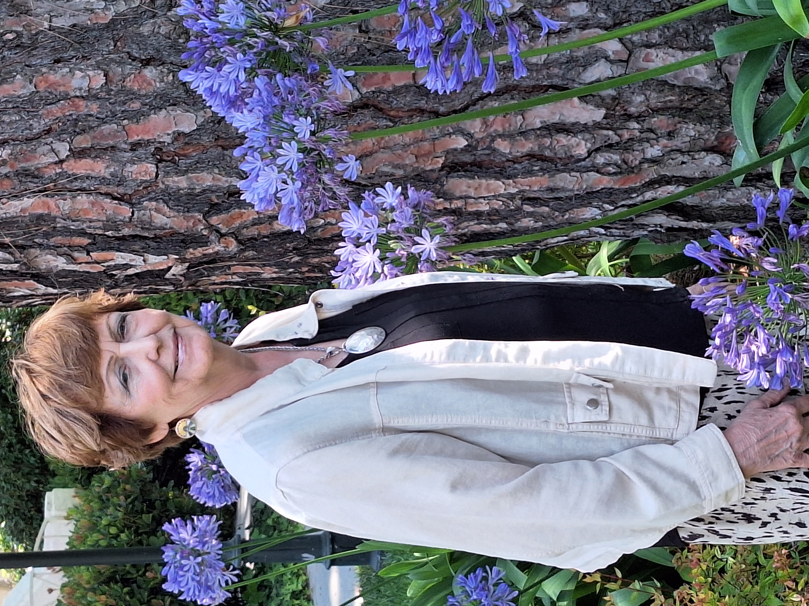

<!DOCTYPE html>
<!-- marbio.html 8/9/2023 -->
<html lang="en">
	<meta charset="utf-8">
	<title>Author Bio</title>
	<link href="https://fonts.cdnfonts.com/css/skrawk-serif" rel="stylesheet">
	<style>
		body {
			text-align:center;
			font-family: "Arial", sans-serif;
			background-color: DarkSeaGreen;
			text-align:center; 
		}
		h1 {
			font-family: "Skrawk Serif", sans-serif;	
			font-size: 16pt;
			text-align: center;
		}
		p {
			width:75%;
			text-align: left;
			margin:auto;
		}
		p::first-letter {
				font-family: "Skrawk Serif", sans-serif;			
				font-weight:bold;
				font-size:16pt;
		} 
	</style>
</html>
<body>
	<h1>Mary Anne Rich-Schweitzer</h1>
	<center></center>
	<br>
	<p>
	Mary Anne Rich Schweitzer, a former teacher and member of the Society of Children's Book Writers & Illustrators in San Diego, CA, is happy to share her book "<i>Munch, Crunch, a Caterpillar Tale.</i>"
<br><br><p>
Born in the beautiful nature-filled Catskill Region of upstate New York, hiking and marveling at nature were always a part of her life.  At a young age, she was a "pied-piper" for children in the neighborhood, teaching and organizing show presentations to the tunes of "How Much is that Doggie in the Window" and "Catch a Falling Star".
<br><br><p>
An advocate for children, she was recognized in 1999 by the Spirit of Women Foundation for her ten years of compassionate work with children bravely battling AIDS/HIV.  Her work at Robert Wood Johnson University Hospital in New Brunswick, NJ. enriched her and taught her what truly counts in life.  Mary Anne organized volunteers from Rutgers University to help in this endeavor.  The words of a volunteer say it all, "The most positive aspect of the program was impacting and contributing to the 'wholeness' of mankind" 
<br><br><p>
Mary Anne enjoys reading, writing and cooking. Walking and exercising are a high priority for her. Writing children's books is one of her passions.  She hopes that children will enjoy more of her books in the future
</body>
